1年システム科 合澤陽真 18yo
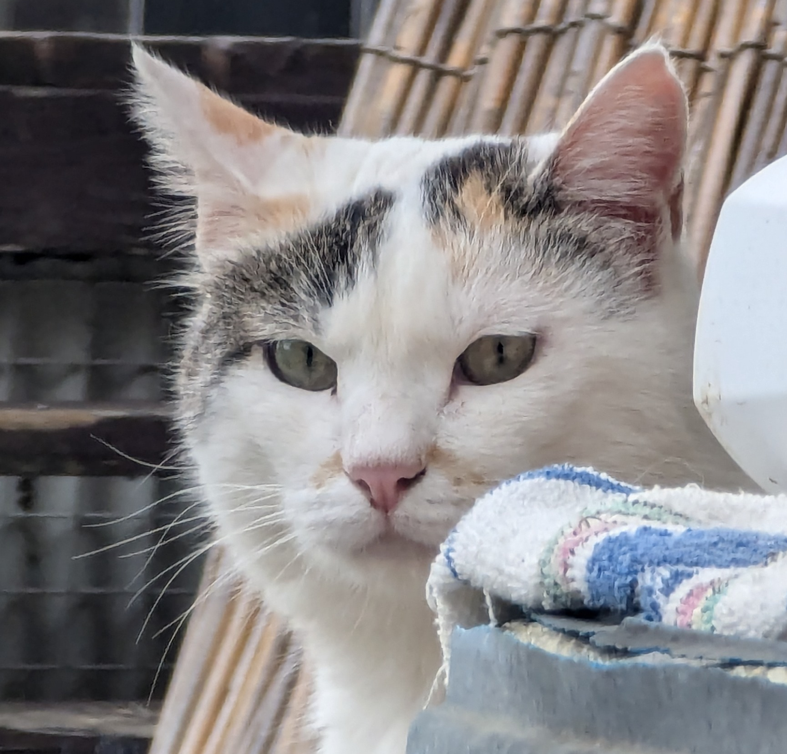
-
私の紹介
- 趣味はパソコン操作とギターを弾くことです。
- 好きなアーティストはB'zです。
- 独学でデザイン工学を勉強しています。デザインを好きになったきっかけはGoogleが提唱するMaterial Designです。
-
高校からHTMLを知り、現在までだいたいここまで独学で来ました。
北コンではIT研究部に所属し情報学習について日々研鑽しています。 - IT研究部1年生の作品は個性あふれる作品となっていますので、ぜひご鑑賞ください。
-
ちなみにここにある画像の猫は家で飼っているボス猫です。
趣味でよく写真を撮るので下にスクロールしてみてください。（猫だけですが）
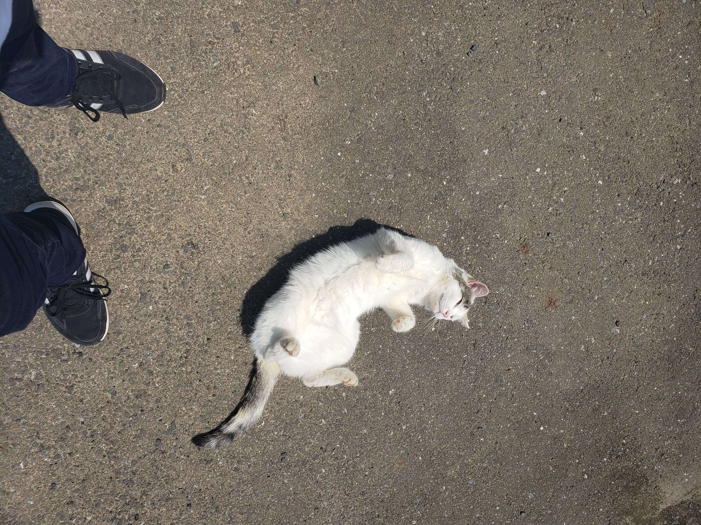
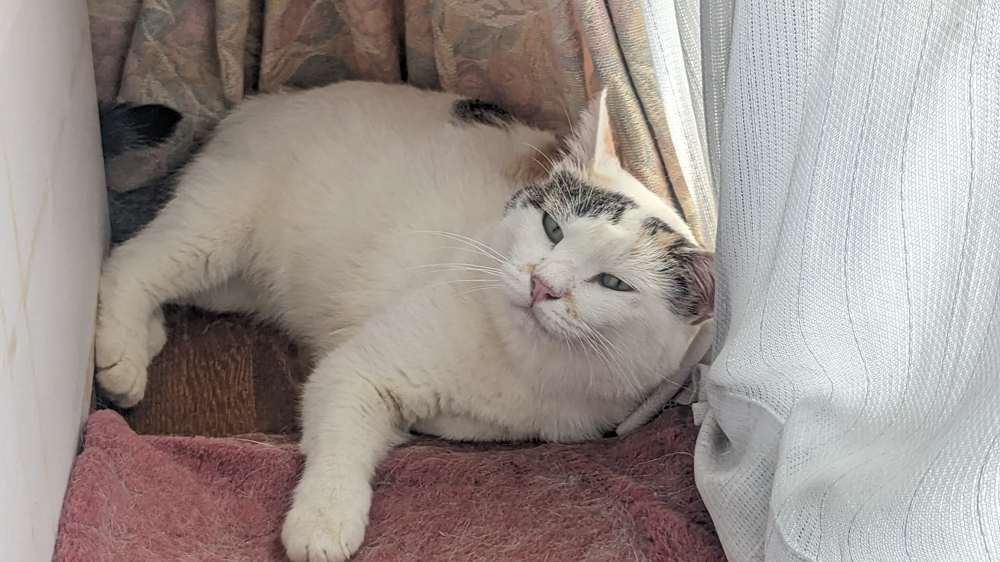
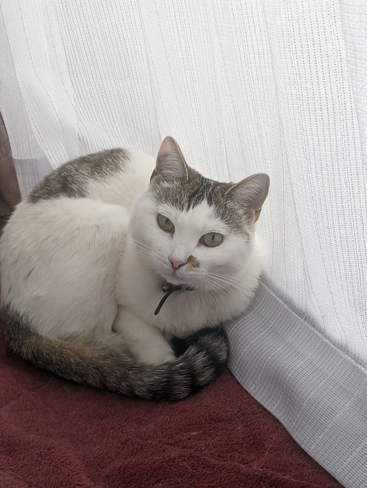
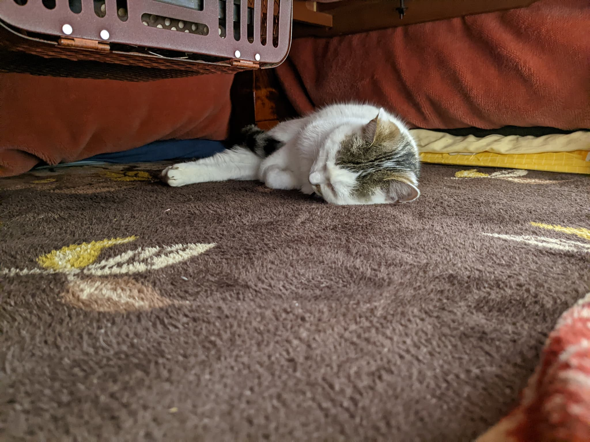
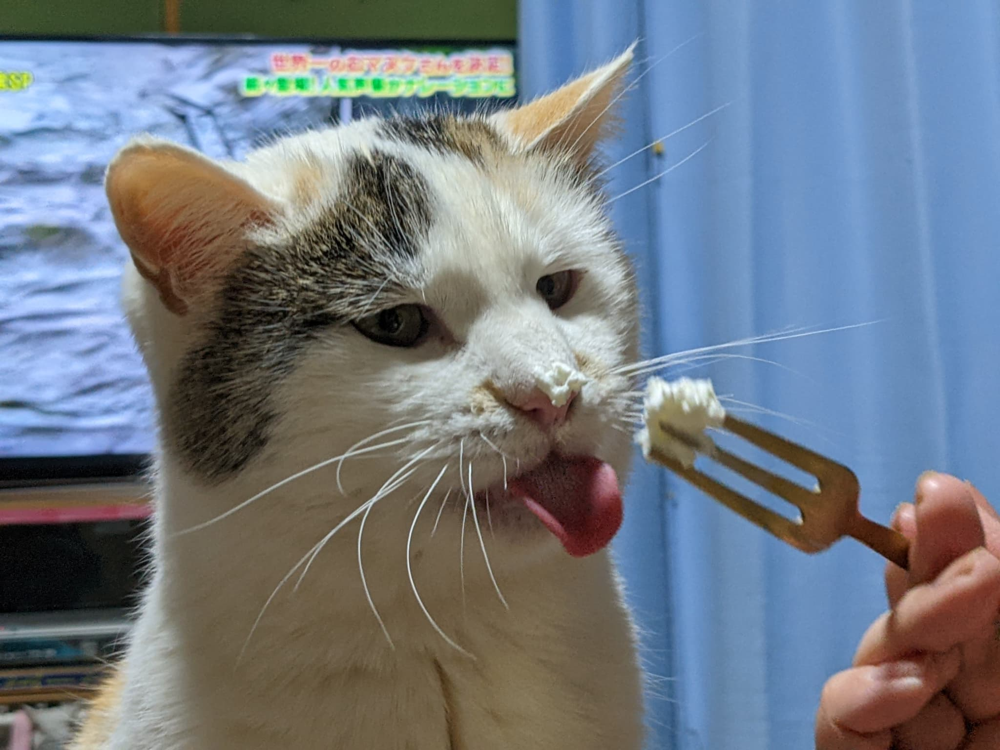
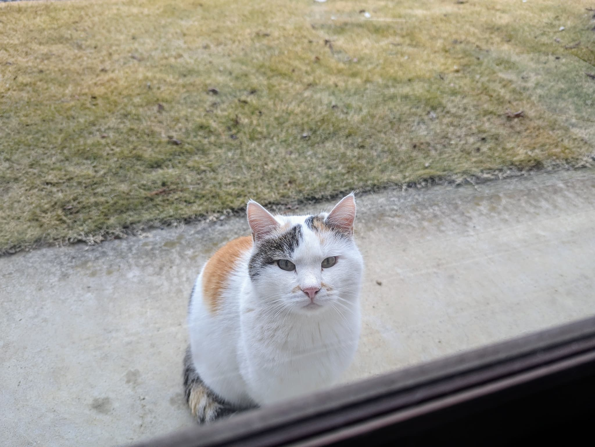
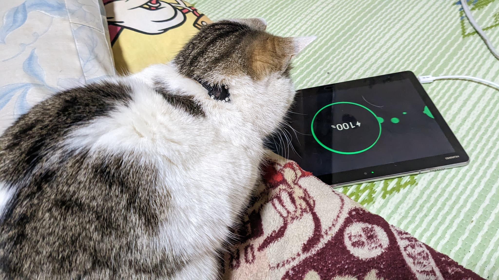
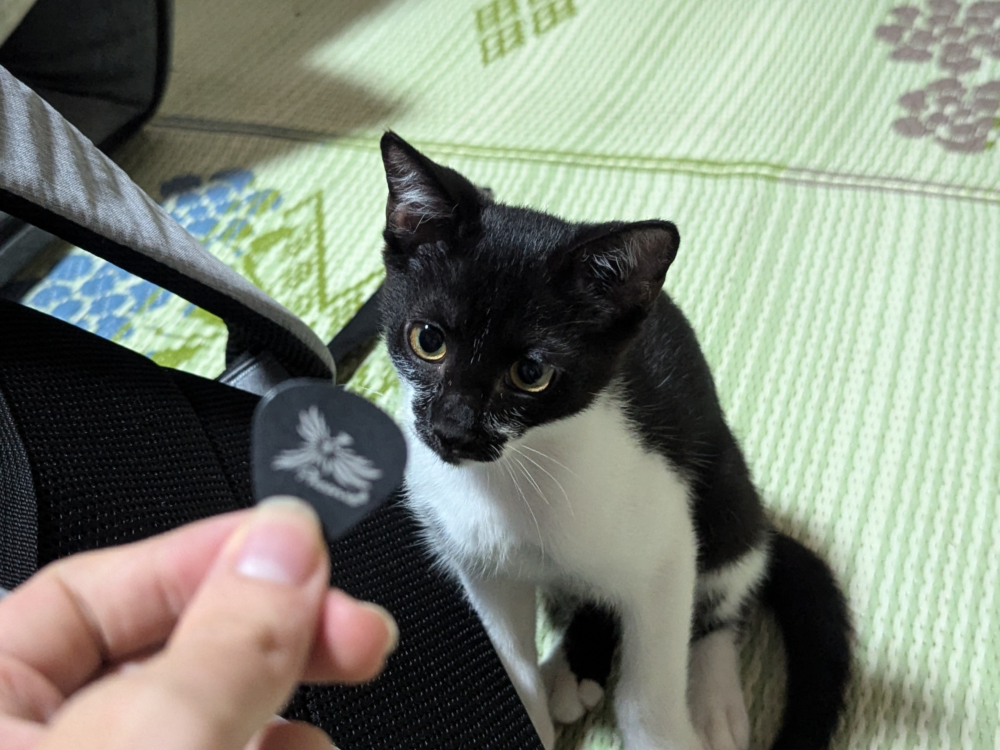
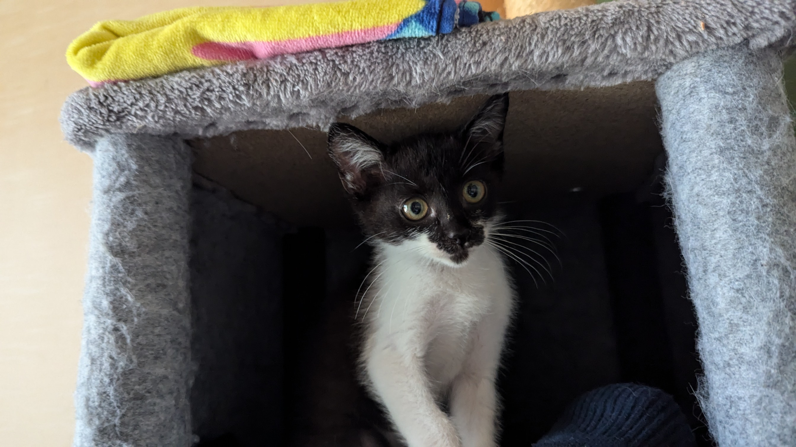
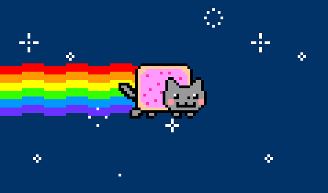